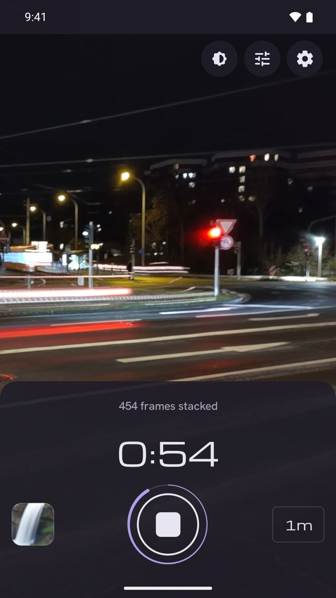
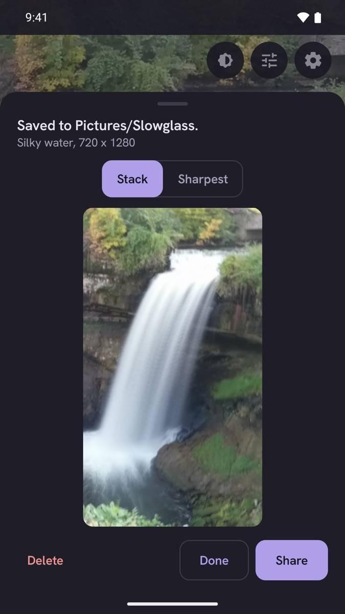
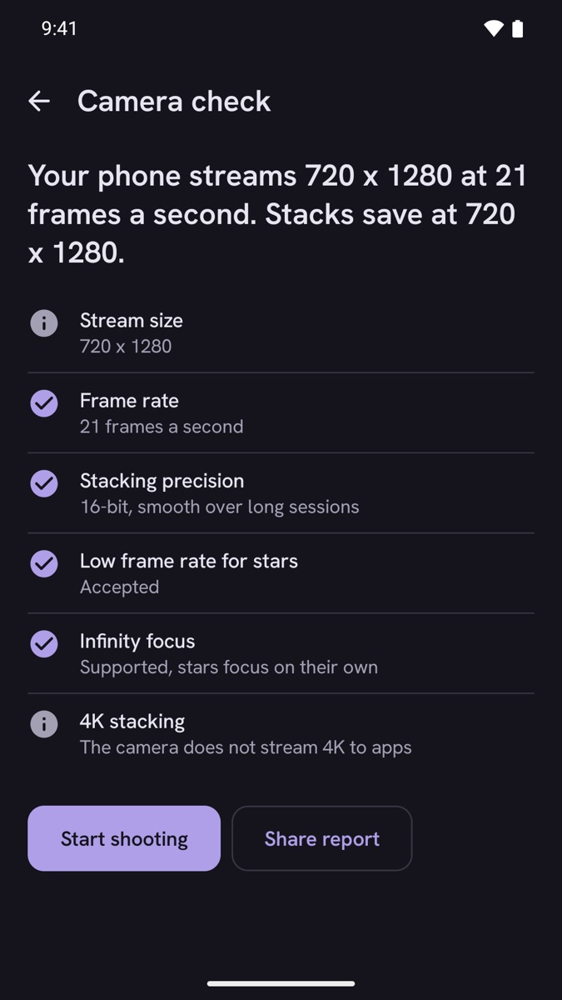
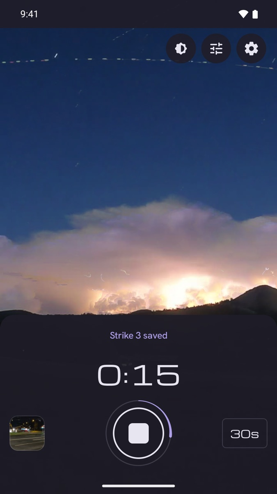

Put the phone somewhere steady, tap once, and watch tail lights draw across the screen.
Get it on Google Play

A five second camera check on first launch measures the stream size, the frame rate while stacking, and whether star settings work. Photos save at the size the camera streams to the app, often 1920 x 1080, and Slowglass never calls that full resolution.
The check runs on your own phone, so you know the result before you rely on it.


One-time purchase. No ads, no subscription, no account. Works fully offline.
USD 2.99 once, INR 149 in India. Everything is included.
Slowglass has no internet permission. Your photos are ordinary files in Pictures/Slowglass, and the session log exports to JSON or CSV whenever you want it.